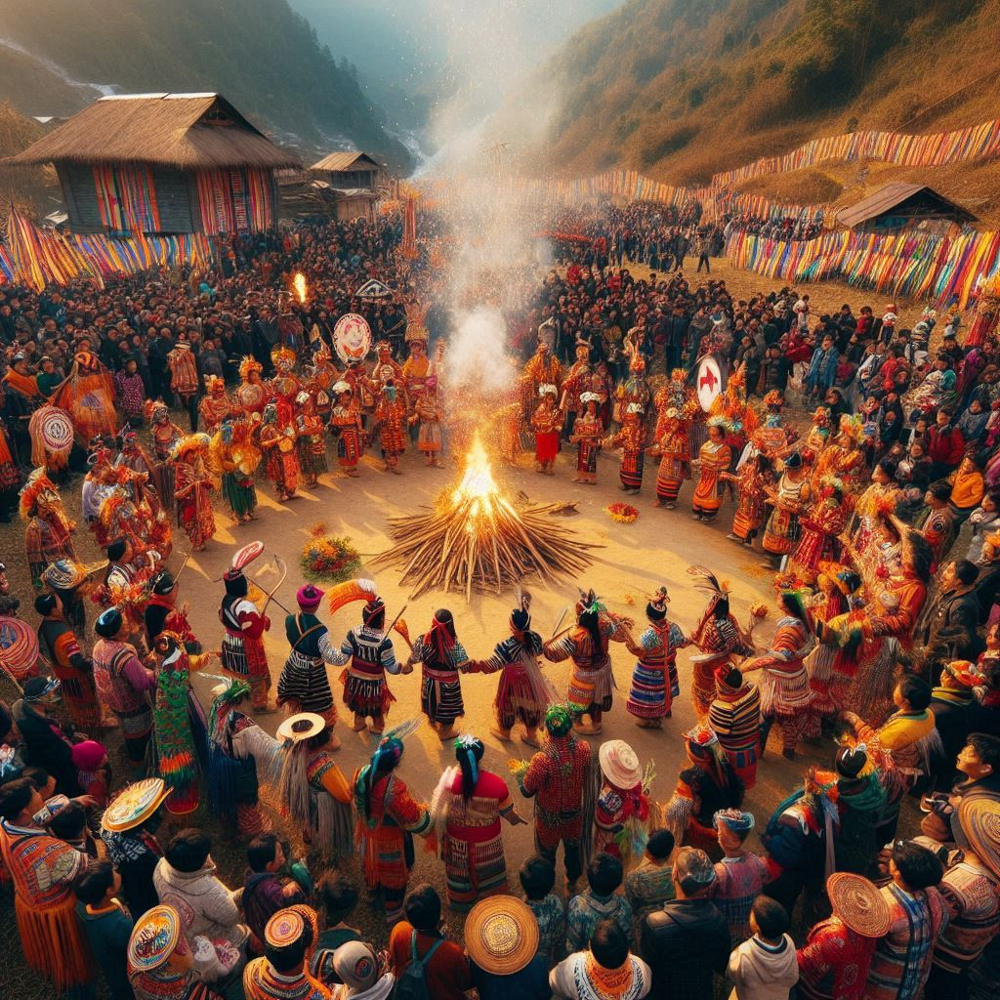

Time of Celebration: February/March (based on the lunar calendar)
Significance: Losar is the Tibetan New Year, celebrated with great enthusiasm by the Monpa
and Sherdukpen tribes, who follow Tibetan Buddhism.
Highlights: The festival is marked by prayers, hoisting of the prayer flags, and ritual
offerings in monasteries to drive away evil spirits and welcome prosperity. People clean and
decorate their homes, wear new clothes, and prepare special delicacies. The celebrations include
cultural performances, folk songs, and traditional dances like the Cham Dance (masked dance).
2. Solung
Tribe: Adi Tribe
Time of Celebration: September
Significance: Solung is an agricultural festival that celebrates the harvest and invokes the
deities for prosperity and the protection of crops.
Highlights: The festival spans several days and involves rituals, animal sacrifices, and the
distribution of rice beer. Traditional dances like Ponung are performed by women, while men
participate in folk songs and storytelling sessions. A ritual to honor the goddess of fertility,
Kine Nane, and another to please the spirits of livestock are central to the festival.
3. Mopin
Tribe: Galo Tribe
Time of Celebration: April
Significance: Mopin is celebrated to ensure a good harvest, ward off evil spirits, and bring
prosperity, wealth, and happiness.
Highlights: The highlight of the Mopin festival is the Popir Dance, performed by women
in traditional white attire. Rice beer, locally known as Apong, is prepared in abundance, and
a special rice cake called Pithas is made. People smear rice powder on each other's faces as
a symbol of prosperity.
4. Dree
Tribe: Apatani Tribe
Time of Celebration: July
Significance: Dree is an agricultural festival where prayers are offered for a bountiful
harvest, fertility, and protection against pests and natural calamities.
Highlights: The festival includes rituals and sacrifices to appease the gods Tamu,
Metii, and Danyi. People offer traditional food and drinks to the gods, and a spirit
of community prevails with feasts, folk dances, and sports competitions. Dree is also marked by a
display of cultural performances and traditional songs.
5. Nyokum
Tribe: Nyishi Tribe
Time of Celebration: February
Significance: Nyokum is a nature-worship festival, where the Nyishi people pray to the gods
and spirits of nature for peace, harmony, and prosperity.
Highlights: The celebration involves rituals and sacrifices performed by priests to invoke
the blessings of the gods. People dress in traditional attire and perform community dances. The
Nyokum Yullo, a grand feast, is an important part of the festival, where locals and visitors
come together to celebrate.

6. Si-Donyi
Tribe: Tagin Tribe
Time of Celebration: January
Significance: Si-Donyi is a nature-based festival celebrated to honor the earth and the sun,
seeking their blessings for peace, good health, and well-being.
Highlights: The festival includes ceremonial prayers, sacrifices, and folk dances. The main
ritual involves offerings to Si, the earth goddess, and Donyi, the sun god. The
community participates in a grand feast, and traditional dances are performed to celebrate unity and
prosperity.
7. Reh
Tribe: Idu Mishmi Tribe
Time of Celebration: February
Significance: Reh is an important festival for the Idu Mishmi tribe, centered around the
celebration of relationships, fertility, and community harmony.
Highlights: The festival is known for its elaborate rituals involving animal sacrifices to
the gods and communal feasting. The Idu Mishmi people perform traditional dances and sing songs that
highlight the significance of relationships and nature in their culture.
8. Loku
Tribe: Nocte Tribe
Time of Celebration: November
Significance: Loku is a harvest festival where the Nocte tribe celebrates the end of the
sowing season and welcomes the harvest season.
Highlights: The festival lasts for three days, involving rituals, folk dances, and communal
feasting. The Chamkan ritual, which signifies the cutting of the jungle, is a key aspect of
the festival. Men and women wear traditional attire and participate in dances and songs that
celebrate the community’s agricultural achievements.
9. Boori Boot
Tribe: Hill Miris (Nyishi sub-tribe)
Time of Celebration: February
Significance: Boori Boot is celebrated to mark the end of winter and the beginning of the
sowing season. It is a thanksgiving festival for a good harvest and the well-being of the community.
Highlights: The festival includes traditional dances, songs, and rituals. Offerings are made
to the gods to seek blessings for a good crop and prosperity. The entire village comes together to
celebrate through feasts, cultural performances, and sports events.
10. Pongtu
Tribe: Tutsa Tribe
Time of Celebration: April
Significance: Pongtu is an agricultural festival that welcomes the harvest and is observed
with prayers for peace and prosperity.
Highlights: The Tutsa tribe celebrates Pongtu with rituals, communal feasting, and
traditional dances. The festival is also an occasion for social gatherings, where people come
together to strengthen bonds within the community.